|
|
|
|
|
From Aden - with an unexpected divert
25th April 2009 27d 13.525N 033d 50.486E Hurghada Marina, Egypt
Greetings all.
Greetings from Egypt still. To be exact, greetings from Hurghada, about 180 miles south of the start of the Suez canal – and where we’re now entering our 3rd week. The first couple were planned – we did a side trip down the Nile – but for the last 10 days we’ve been waiting for a weather window to head on. The weather in this last part of Red Sea is notoriously bad – it’s worth the wait.
But before we got here, we had the chance to enjoy Aden for a few days. Well, endure. Having been blown away by Oman, we found Aden encapsulated every sad thing we’d heard. I get ahead of myself though.
Aden – a diamond that’s lost her luster
We were faced with two problems when we arrived. Our rudder was leaking and Peter’s knee was starting to play up. Neither were easy to fix – we couldn’t get the parts for the rudder and having seen the outside of an Aden hospital, Peter thought the best thing for his knee was just rest. Our first day had been spent sorting out the various paper trails that bureaucracies seem to need, then inviting Bob and Leonie of “Island Fling”, with whom we’d become good “Radio friends” during the convoy, over for a drink. By the end of the evening, the girls had decided Bob and I were brothers, separated at birth. With the hangover the next morning, Peter wasn’t sure if that was a good thing. Neither was Bob.
The second day was spent doing basics – getting money (Yemen ATM’s often give Rials or US Dollars) and scouting out places to provision. Aden was an eye opener – seedy, dirty and decrepit. A local taxi took us to Aden Mall where he told us was a grand supermarket – he was right – it was like being on a spaceship, 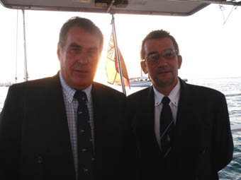 being transported to another world. This 1st world mall – 1st world supermarket.
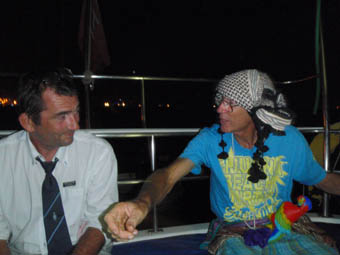 Having done a recce, we headed back to the boat to prepare for a cocktail party Bob was throwing on Island Fling for all the Group 4 boats. We’d agreed that we were both English, we should 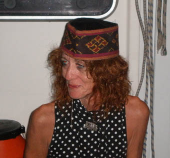 dress accordingly so both wore long trousers, white shirts, club ties and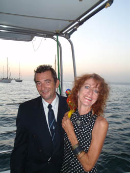 blazers.Dress for the others, as you’ll see from the photographs, was optional.
After a quick explore of the local market (and discovering the most impressive statute of Queen Victoria), Peter spent most of the next day in the lazerette doing some clean-up work from a leaking joint which had been weeping grey water for a bit while Jean cleaned the boat up and prepared the shopping list. The plan was to head off with Bob and Leonie to explore the following day, but Peter’s knee was still sore, especially having been hunched up in the lazerette the day before, so he spent the day with leg up and a good book which seemed to help.
Once the others got back, we headed off for dinner at the International Seaman’s Club where Jean scandalized the locals when she got up and danced.
Maybe scandalized is a little strong, but close. Yemen was the first country we have been in where more woman wear the burka than not (IN Oman, you just rarely saw a woman out). And there were none of the beautiful headscarves and long dresses we’ve seen else where. Here black is the new black and probably has been for hundreds of years.
Qat – Yeman’s curse
But it’s doubtful the men folk would ever think about it. Doubtful they think about much. The country is addicted to qat – the narcotic leaf of a plant that is grown everywhere. If you’re lucky, you can get things done in the morning, but by lunchtime, most men have a golf ball size gob of qat leaves in their cheek. They just lie around, chatting, laughing – chewing the cud of their qat like placid cows.
When you then consider that we read somewhere that about 40% of the working population is involved in the growing and distribution of qat, it’s no surprise that the country is just stagnating. It’s a lot easier to stuff your cheek with qat that get off your backside and repair that building that’s falling down, or finish the new building that you started 10 years ago.
That’s not to say there aren’t some really great Yemeni’s that we have met, as turned on and forward looking as we all are, but it’s so sad to see what’s happening.
Fun and Games re-fueling
The next day, our last before leaving, summed up the sadness of Aden.
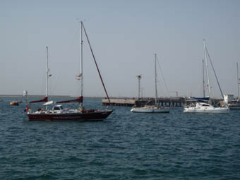 We had to refuel, but couldn’t risk coming alongside the PoW fuel dock because it’s all silted up (remember, this is where the Brits used to refuel destroyers). So Bob and I pooled our jerry cans and headed over to the barge (this is alongside the old quay to try and get a little more depth). It’s covered in old oil and sand, slippery as anything. We climbed up and went off to find someone – even though it was only 1400, everything was closed – come back tomorrow. 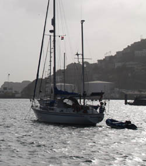
The next day back we went. Before you can get your fuel, you have to head off to an office block, down a corridor , all painted in battleship grey, walking past signs that read Radio Room (full of 1950’s Radio Cabinets), to the fuel masters office. Here you say how much you want, he fills in a form and off you go to pay – another building. Then receipt in hand, back to the master, another stamp, and then you can go back and get your fuel. And we had to do four trips to fill both boats.
We’d bet this system is a bit of a hang-over from the British days, but with another couple of layers of paperwork added in. What looked certain was that none of the equipment had been renewed since independence. And that the diesel we bought was the dirtiest, most contaminated fuel we had seen anywhere to date. And that’s saying something.
Yemen has been through hard times recently with a viscous civil war, but the stuffing seems to have been knocked out of the people. There is only today, no sense of the future and what can be achieved. Sadly, we were pleased when we lifted our hook and headed off.
To the Red Sea
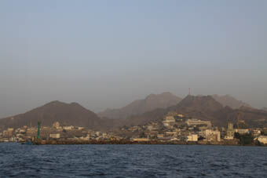
While Lo was quite keen on a convoy to the Red Sea, a fair
few yachts wanted to push on so it was agreed we’d leave
whenever a boat was ready. We left around lunch time of the
day most yachts left and had a glorious sail for 24 hours.
Then mid morning, we heard a call from Sahula whose
auto pilot had died again – he was heading into Ras Al Arah
and asking if anyone might be able to lend a hand.
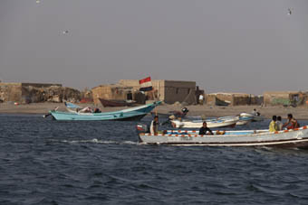
We found ourselves anchored up in a small fishing port – David rafted up to Bob and we sat and waited. A few fishermen came past saying hello and trying to sell us fish, but we still had a fair bit in our freezer. After a while, David came on the radio and said that he wouldn’t be able to fix the problem today (the glue needed 12 hours to set). Since another yacht was coming in to anchor over night, we decided we’d head on.
We were only 40 miles from Bab el Mandab, the straits that mark the start of the Red Sea, and as dusk fell, we were cracking along with a grand wind. As the evening progressed though, the wind swung more westerly and increased in strength till we were battling against 40 knots over the deck. Island Fling meanwhile, who had been motoring were about 5 miles north of us and called us up to say they had no wind. Blow this, we thought, tacked round and soon sailed into relatively peaceful winds that continued to drop as we got closer to Bab el Mandab.
At 22.16 on 9th March, we finally left the Indian Ocean and entered the Red Sea – motoring because there was no wind. Ah, happy days – within the next 10 miles, the wind was back up to 35kts, but from the south this time. Downwind sailing again, but a tad strong so we started to head across the shipping lanes to Ras Terma, which we’d previously plotted as a possible anchorage.
As it turned out, we never got close.
Rescue at Dawn – well, just after
About 0200, we picked up a distress call from Cool Change, a single-handed Canadian sailor who's in the Rally. He had fallen asleep and managed to hit a small island (sheer cliffs, tiny). His boat had suffered a fair bit of damage, holed below the waterline and its bow sprit smashed away. The headsail was unfurled itself and, then all jammed up in the wreckage of the bow-sprit. And there was nothing he could do about it – he was too busy down below bailing with a bucket to try and stay on top of the leak.
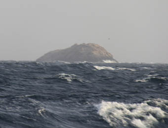 He was about 20 miles N of us (Island Fling were a couple of miles nearer) and he was out of control.
Why didn’t he call a Mayday, I hear you ask. Well, you only call Mayday if there is imminent danger of loss of life. Peter felt his boat was savable and his life was in no immediate danger (sic) – plus he’s un-insured and a Mayday rescue round here can be very costly.
Island Fling and Hinewai were the closest boats to hand so we responded. More sail and on with the motors - in winds of 35kts, gusting 45 and seas of 3-4 m. It was a sleigh ride - crashing and rolling our way towards Cool Change. Every 15 minutes, he would call up his position which we would both plot and soon realised that Cool Change was being blown N, out of control, at 4-5 kts so we were only making 3 nm on him an hour. We believe that eventually Peter went up on deck, slashed the sail to let nature take its course and dashed down below again.
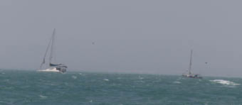 Leonie of Island Fling was great, called Peter up and re-assuring him we were coming while Jean kept working out possible places we could get him into which had a sandy not rock bottom.
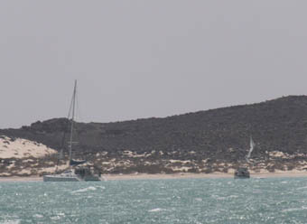
Island Fling reached him around 07.00 and by the time
we arrived at 08.30, they had taken him in tow and were
heading inshore to try and beach him. It became a line call
– as Island Fling took up the tow, the strain on
Cool Change opened the holes even more.
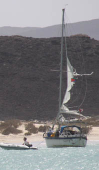
We anchored up and Peter went ashore to help Peter salvage his valuables and secure Cool Change so when she fell over with the tide dropping, she fell exposing the holes in her hull. He couldn’t stop talking – the sheer hard work of bucket bailing for 6 hours had been overwhelmed by the relief of being safe. The four of us pretty tired as well – we had pushed our boats hard through some very rough weather, but it had been worth it.
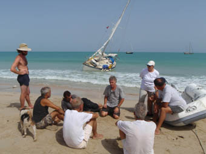
During the day, other yachts arrived to help and the next
morning, there was a planning meeting on
the beach. The
damage under the waterline was not as bad as we had all
feared – being wood, she had flexed under the 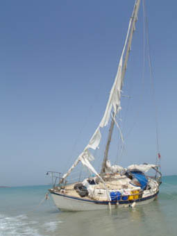
And it turned out to be surprisingly easy. Several boats were carrying underwater setting filler – developed for plumbers. They are little slugs of material – only an inch or so long with consistency of putty. Wrapped around them is a second layer – the hardener. You simply knead the slug in your hand, mixing the two materials and after half an hour, it sets solid. Guy 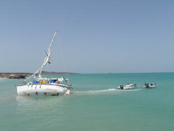 and Leo braved the waves, smearing the mix into the holes and seams as we all stood by, kneading hard. Soon, Cool Change was watertight again.
Now, we had to re-float her. Island Fling had already had
to pull herself off the beach as her hulls started to dig in
so, after an aborted attempt by two dinghies to pull Cool
Change off, we ran a line out to her and with four
people hanging off one o 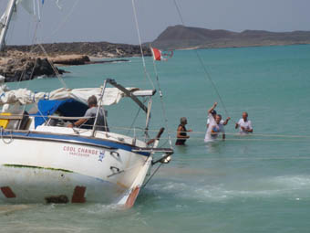 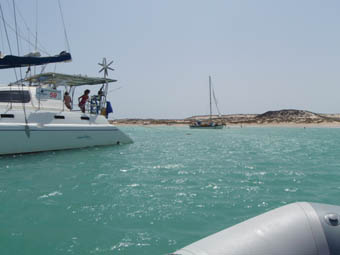
And the area was an eye opener. While it was mainly volcanic rock (we had a constant stream of pumice stone floating past the yachts), the beach was beautiful soft yellow sand with outcrops of black rock at each end. But even these were partially covered in sand, giving a “spotted dick” look.
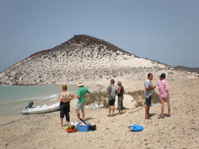 We were anchored in the less of 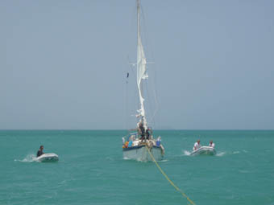 a spit, maybe a mile wide and looking down into another bay across sand dunes, also covered in shoe-box sized black rocks, creating strange patterns. In places, these rocks had been piled up to create square, open topped shelters, maybe 2 metres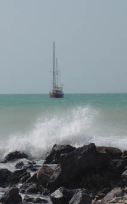 high and along three sides – the last being open.
At first we thought they were shelters from the sand, but one ex-military yachtie pointed out they all faced the sea and could well be prepared firing pits – we were very close to the disputed Eritrean/Ethiopian border.
Whatever they were, one collapsed shelter made an ideal place to build the fire and barbeque some of the succulent fish yachts had been catching over the past day or two. With each yacht bringing along a side dish, and some booze, it was the perfect end to a busy, but successful day.
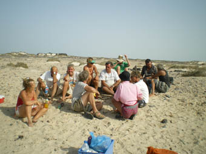 OK, now to choose some photographs for this email and try and get it off. Not having much luck with internet at the moment – we’re meant to have free Wi-Fi here, but it’s pitifully slow when it works at all. Well, let’s try.
Hugs
Peter & Jean
Next Log Page: On up the Red Sea, lots of waiting for weather, great times
|
|
|
|
|
|
|
|
The Crew The Route The Yacht The Log Guestbook Links Contact Us |
|
|
|
|
|
Home |
|
|
All Original Content of this Web Site Copyright © 2000, 2001, 2002, 2003, 2004, 2005, 2006, 2007, 2008, 2009 Ocean Odyssey Pty Ltd |